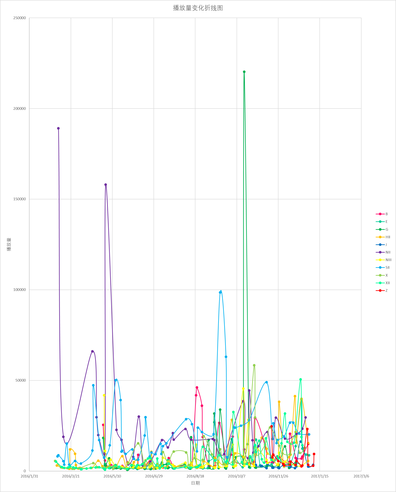

时段1：-20170111
虽然全团第一次大变动应该是18年的组阁，但是为了方便观看，还是以沈芭的首演作为第一个分界点。 （北广的成立也是一个重大事件，但是寒影更新公演基本是从北广成立开始，就无须再做分界了）

整体而言，这段时间除了猫狗之间缠缠绵绵，其余队伍都是只有几千播放量的nbcs水平，以至于难以分辨究竟谁才是nbcs中的nbcs。
但是G队，尽管还没有双偶神公演，尽管还在队内撕逼泥潭，却凭借一张姬情四溢的封面（俺没补那场不确定内容是不是也这么高能）力压元恩男装公演，夺得了本时期播放量桂冠。
B队聚集了分团大量人气成员（聪璇奶包青等），也建立了紧密围绕在ddd同志周围的队内体系，成为了蓝紫之间耀眼的一抹红。
此外，HII凭借八期生杜海涛的流量以及换了十八闪新公演的春风，XII凭借头部成员的生诞和代号XII的上演，都在年末有不错的表现。